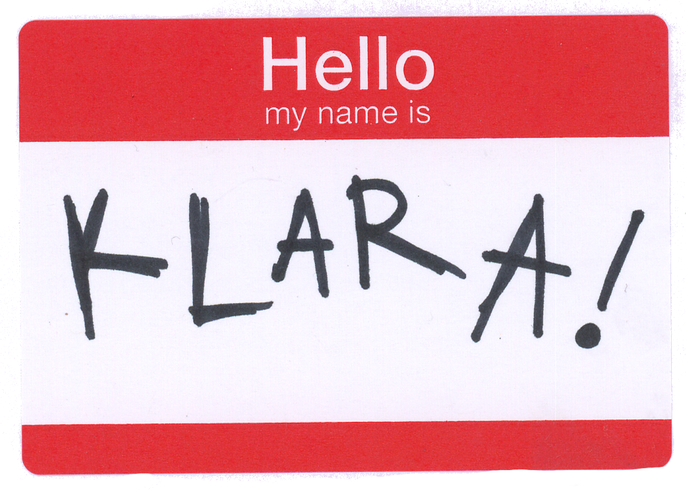

About Me

My work is fueled by a desire to understand the limits of human communication and inspired by the rapid growth of robotics; asking what design properties make us connect to and through a technology as well as how state-of-the-art devices can be reimagined through mundane materiality. As more computational objects are given 'agentic' abilities, how do we design connection past programmed discussion? What other methods of relatability lie in a robot's materiality, presence, or ability to change? I am eager to explore these problems through mixed methods of social inquiry and technical prototyping, combining sociological theories on social materiality with experimental engineering to build technologies that excite, inspire, and engage the overlooked interactions of everyday life.
Education
MS Creative Technology and Design, ATLAS Institute University of Colorado at Boulder
BA Sociology and Integrated Visual Arts, Emory University
Contact
Email:klni1456@colorado.edu Send Email
Publications
2026, Marshmallow Robot Skins: Edible Human-Robot Interaction. Creativity and Cognition